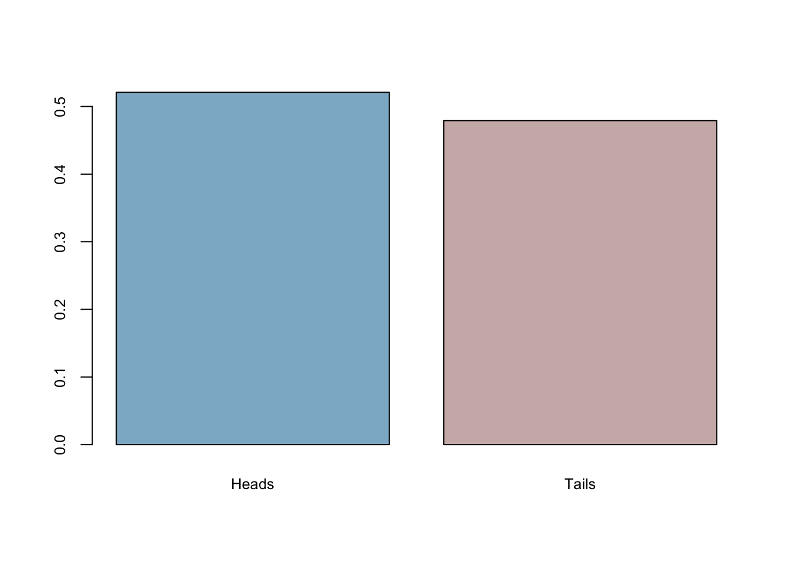
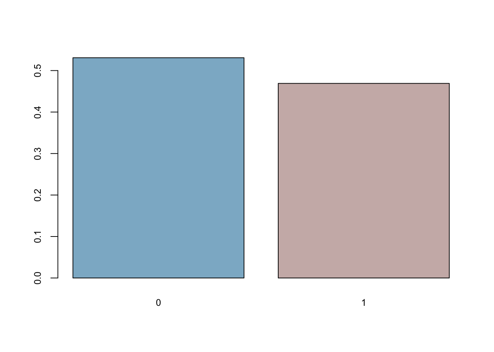
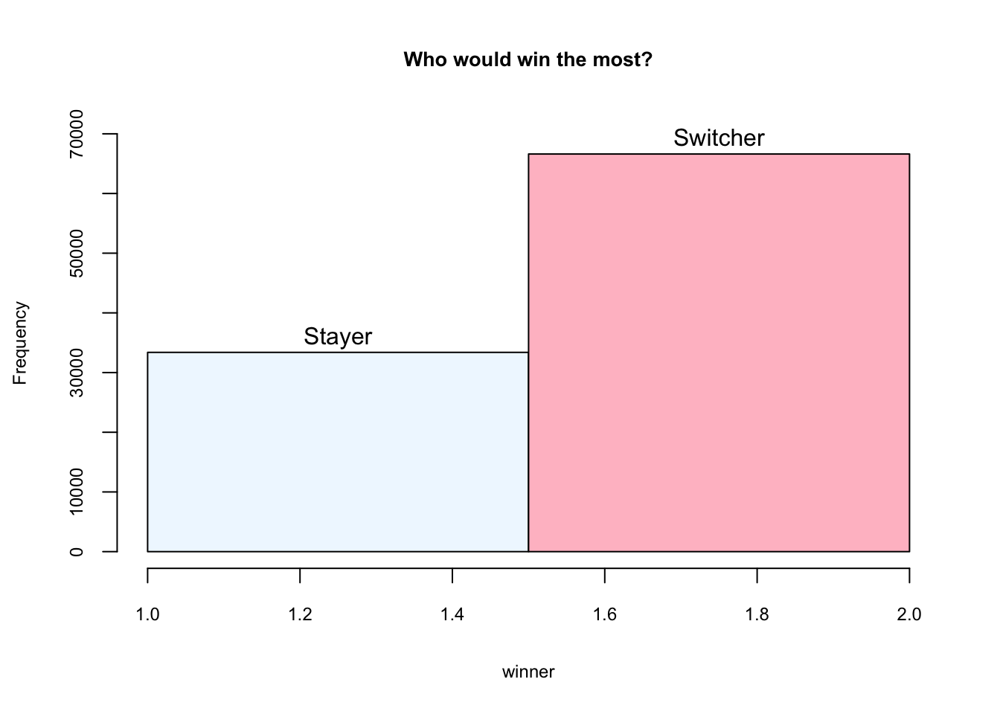

Chapter 37 R Lab 4 - Simulation in R
In this lab we will learn how to simulate data and illustrate their use in several examples. More specifically we’ll cover the following subjects:
- Sampling in R:
sample(), - Random number generating with probability distributions,
- Simulation for statistical inference,
- Creating data with a DGM,
- Bootstrapping,
- Power of simulation - A fun example.
Why would we want to simulate data? Why not just use real data? Because with real data, we don’t know what the right answer is. Suppose we use real data and we apply a method to extract information, how do we know that we applied the method correctly? Now suppose we create artificial data by simulating a “Data Generating Model”. Since we can know the correct answer, we can check whether or not our methods work to extract the information we wish to have. If our method is correct, than we can apply it to real data.
37.1 Sampling in R: sample()
Let’s play with sample() for simple random sampling. We will see the arguments of sample() function.
sample(c("H","T"), size = 8, replace = TRUE) # fair coin## [1] "T" "T" "T" "T" "T" "T" "H" "T"sample(1:6, size = 2, replace = TRUE, prob=c(3,3,3,4,4,4))## [1] 5 4#let's do it again
sample(c("H","T"), size = 8, replace = TRUE) # fair coin## [1] "H" "H" "T" "T" "H" "T" "H" "T"sample(1:6, size = 2, replace = TRUE, prob=c(3,3,3,4,4,4))## [1] 2 3The results are different. If we use set.seed() then we can get the same results each time. Lets try now:
set.seed(123)
sample(c("H","T"), size = 8, replace = TRUE) # fair coin## [1] "H" "H" "H" "T" "H" "T" "T" "T"sample(1:6, size = 2, replace = TRUE, prob=c(3,3,3,4,4,4))## [1] 4 4#let's do it again
set.seed(123)
sample(c("H","T"), size = 8, replace = TRUE) # fair coin## [1] "H" "H" "H" "T" "H" "T" "T" "T"sample(1:6, size = 2, replace = TRUE, prob=c(3,3,3,4,4,4))## [1] 4 4We use replace=TRUE to override the default sample without replacement. This means the same thing can get selected from the population multiple times. And, prob= to sample elements with different probabilities, e.g. over sample based on some factor. The set.seed() function allow you to make a reproducible set of random numbers. Let’s see the difference.
x <- 1:12
# a random permutation
set.seed(123)
sample(x)## [1] 3 12 10 2 6 11 5 4 9 8 1 7# This shuffles the numbers
set.seed(123)
sample(x, replace = TRUE)## [1] 3 3 10 2 6 11 5 4 6 9 10 11# This shuffles the numbers and replacing themMore…
# sample()'s surprise -- example
x <- 1:10
sample(x[x > 3]) # length 2## [1] 8 6 9 4 7 10 5 sample(x[x > 9]) # oops -- length 10! So this doesn't work## [1] 3 8 2 7 9 1 6 10 4 5 sample(x[x > 10]) # length 0## integer(0)Here is an example: let’s generate 501 coin flips. In the true model, this should generate heads half of the time, and tails half of the time.
set.seed(123)
coins <- sample(c("Heads","Tails"), 501, replace = TRUE)Now let’s take that data as given and analyze it in our standard way! The proportion of heads is:
mean(coins=='Heads')## [1] 0.5209581barplot(prop.table(table(coins)),
col = c("lightskyblue3","mistyrose3"),
cex.axis = 0.8, cex.names = 0.8)
So what’s our conclusion? We came to the conclusion that the true model generates heads 0.493014 of the time. But it is NOT 0.50 , so pretty close, but not exact. Did this whole thing work or not? What if it always errs on the same side? In other words, what if it’s always bias towards heads in every sample with 501 flips? We will do our first simulation to answer it momentarily.
One more useful application:
sample(letters, 10, replace = TRUE)## [1] "p" "z" "o" "s" "c" "n" "a" "x" "a" "p"37.2 Random number generating with probablity distributions
Here are the common probability distributions in R. Search help in R for more detail.
beta(shape1, shape2, ncp),
binom(size, prob),
chisq(df, ncp),
exp(rate),
gamma(shape, scale),
logis(location, scale),
norm(mean, sd),
pois(lambda),
t(df, ncp),
unif(min, max),
dnorm(x,) returns the density or the value on the y-axis of a probability distribution for a discrete value of x,
pnorm(q,) returns the cumulative density function (CDF) or the area under the curve to the left of an x value on a probability distribution curve,
qnorm(p,) returns the quantile value, i.e. the standardized z value for x,
rnorm(n,) returns a random simulation of size n
rnorm(6) # 6 std nrml distribution values## [1] -0.2645952 -0.9472983 0.7395213 0.8967787 -0.3460009 -1.7820571rnorm(10, mean = 50, sd = 19) # set parameters## [1] 58.83389 12.93042 40.19385 59.29253 67.13847 62.16690 68.07297 38.61666
## [9] 24.71680 38.74801runif(n = 10, min = 0, max = 1) #uniform distribution## [1] 0.96415257 0.08146656 0.85436475 0.80223822 0.38517360 0.32759740
## [7] 0.20493870 0.56938266 0.88805519 0.52971409rpois(n = 10, lambda = 15) # Poisson distribution## [1] 15 15 6 17 16 13 15 15 15 21# toss coin 8 times using binomial distribution
rbinom(n = 8, size = 1, p = 0.5)## [1] 0 0 1 0 1 1 1 0rbinom(8,1,.5) # args correct order## [1] 1 0 0 1 1 1 1 0# 18 trials, sample size 10, prob success =.2
rbinom(18, 10, 0.2)## [1] 5 1 0 4 2 1 4 0 1 3 1 1 1 3 1 3 1 1Can we replicate our coin-flip example here with probability distributions? Yes, we can!
set.seed(123)
coins <- rbinom(n = 501, size = 1, p = 0.5)
mean(coins==0)## [1] 0.5309381barplot(prop.table(table(coins)),
col = c("lightskyblue3","mistyrose3"),
cex.axis = 0.8, cex.names = 0.8)
37.3 Simulation for statistical inference
Let’s predict number of girls in 400 births, where probability of female birth is 48.8%
n.girls <- rbinom(1, 400, 0.488)
n.girls## [1] 201n.girls/400## [1] 0.5025Now, to get distribution of the simulations, repeat the simulation many times.
n.sims <- 1000
n.girls <- rbinom(n.sims, 400, .488)
hist(n.girls, col = "slategray3", cex.axis = 0.75)
mean(n.girls)/400## [1] 0.4872775This is called as sampling distribution. Can we do same thing with a loop?
n.sims <- 1000
n.girls <- rep(NA, n.sims) # create vector to store simulations
for (i in 1:n.sims){
n.girls[i] <- rbinom(1, 400, 0.488)
}
hist(n.girls, col = "lavender", cex.axis = 0.75)Let’s apply a similar simulation to our coin flipping.
n.sims <- 1000
n.heads <- rep(NA, n.sims) # create vector to store simulations
for (i in 1:n.sims){
n.heads[i] <- mean(rbinom(n = 501, size = 1, p = 0.5))
}
hist(n.heads, col="aliceblue", cex.axis = 0.75)mean(n.heads)## [1] 0.4997705Here is another way for the same simulation:
n.heads <- replicate(1000, mean(rbinom(n = 501, size = 1, p = 0.5)))
hist(n.heads, col="lightpink",cex.axis = 0.75)mean(n.heads)## [1] 0.4987265What’s the 95% confidence interval for the mean?
sd <- sd(n.heads)
CI95 <- c(-2*sd+mean(n.heads), 2*sd+mean(n.heads))
CI95## [1] 0.4538446 0.5436085What happens if we use a “wrong” estimator for the mean, like sum(heads)/300?
n.sims <- 1000
n.heads <- rep(NA, n.sims) # create vector to store simulations
for (i in 1:n.sims){
n.heads[i] <- sum(rbinom(n = 501, size = 1, p = 0.5))/300
}
mean(n.heads)## [1] 0.83496Because we are working with a simulation, identifying that the result from this incorrect estimator is wrong becomes easy.
37.4 Creataing data with a Data Generating Model (DGM)
One of the major tasks of statistics is to obtain information about populations. In most of cases, the population is unknown and the only thing that is known for the researcher is a finite subset of observations drawn from the population. The main aim of the statistical analysis is to obtain information about the population through analysis of the sample. Since very little information is known about the population characteristics, one has to establish some assumptions about the behavior of this unknown population. For example, for a regression analysis, we can state that the whole population regression function (PRF) is a linear function of the different values of \(X\). One important issue related to the PRF is the error term (\(u_i\)) in the regression equation. For a pair of realizations \((x_i,y_i)\) from the random variables \((X,Y)\), we can write the following equalities:
\[ y_{i}=E\left(Y | X=x_{i}\right)+u_{i}=\alpha+\beta x_{i}+u_{i} \] and
\[ E\left(u | X=x_{i}\right)=0 \]
This result implies that for \(X=x_i\), the divergences of all values of \(Y\) with respect to the conditional expectation \(E(Y\vert X=x_i)\) are averaged out. There are several reasons for the existence of the error term in the regression: (1) the error term is taking into account variables which are not in the model; (2) we do not have great confidence about the correctness of the model; and (3) we do not know if there are measurement errors in the variables.
In a regression analysis, the PRF is a Data Generating Model for \(y_i\), which is unknown to us. Because it is unknown, we must try to learn about it from a sample since that is the only available data for us. If we assume that there is a specific PRF that generates the data, then given any estimator of \(\alpha\) and \(\beta\), namely \(\hat{\beta}\) and \(\hat{\alpha}\), we can estimate them from our sample with the sample regression function (SRF):
\[ \hat{y}_{i}=\hat{\alpha}+\hat{\beta} x_{i}, \quad i=1, \cdots, n \]
The relationship between the PRF and SRF is:
\[ y_{i}=\hat{y}_{i}+\hat{u}_{i}, \quad i=1, \cdots, n \]
where \(\hat{u_i}\) is denoted the residuals from SRF.
With a data generating process (DGP) at hand, it is possible to create new simulated data. With \(\alpha\), \(\beta\) and the vector of exogenous variables \(X\) (fixed), a sample of size \(n\) can be used to obtain \(N\) values of \(Y\) with random variable \(u\). This yields one complete population of size \(N\). Note that this artificially generated set of data could be viewed as an example of real-world data that a researcher would be faced with when dealing with the kind of estimation problem this model represents. Note especially that the set of data obtained depends crucially on the particular set of error terms drawn. A different set of error terms would create a different data set of \(Y\) for the same problem.
With the artificial data we generated, DGM is now known and the whole population is accessible. That is, we can test many models on different samples drawn from this population in order to see whether their inferential properties are in line with DGM. We’ll have several examples below.
Here is our DGM:
\[
Y_{i}=\beta_{1}+\beta_{2} X_{2 i}+\beta_{3} X_{3 i}+\beta_{4} X_{2 i} X_{3 i}+\beta_{5} X_{5 i},
\]
with the following coefficient vector: \(\beta = (12, -0.7, 34, -0.17, 5.4)\). Moreover \(x_2\) is binary variable with values of 0 and 1 and \(x_5\) and \(x_3\) are highly correlated with \(\rho = 0.65\). When we add the error term, \(u\), which is independently and identically (i.i.d) distributed with \(N(0,1)\), we can get the whole population of 10,000 observations. DGM plus the error term is called the data generating process (DGP)
library(MASS)
N <- 10000
x_2 <- sample(c(0,1), N, replace = TRUE) #Dummy variable
#mvrnorm() creates a matrix of correlated variables
X_corr <- mvrnorm(N, mu = c(0,0), Sigma = matrix(c(1,0.65,0.65,1), ncol = 2),
empirical = TRUE)
#We can check their correlation
cor(X_corr)## [,1] [,2]
## [1,] 1.00 0.65
## [2,] 0.65 1.00#Each column is one of our variables
x_3 <- X_corr[,1]
x_5 <- X_corr[,2]
#interaction
x_23 <- x_2*x_3
# Now DGM
beta <- c(12, -0.7, 34, -0.17, 5.4)
dgm <- beta[1] + beta[2]*x_2 + beta[3]*x_3 + beta[4]*x_23 + beta[5]*x_5
#And our Yi
y <- dgm + rnorm(N,0,1)
pop <- data.frame(y, x_2, x_3, x_23, x_5)
str(pop)## 'data.frame': 10000 obs. of 5 variables:
## $ y : num -37.09 8.41 12.84 44.55 31.87 ...
## $ x_2 : num 0 0 1 1 0 1 1 1 0 0 ...
## $ x_3 : num -1.3163 -0.1002 0.0558 0.7737 0.6297 ...
## $ x_23: num 0 0 0.0558 0.7737 0 ...
## $ x_5 : num -0.6134 -0.0465 -0.0857 1.5022 -0.3612 ...#Here is new thing/trick to learn
#for better looking tables install.packages("stargazer")
library(stargazer)
stargazer(pop, type = "text", title = "Descriptive Statistics",
digits = 1, out = "table1.text")##
## Descriptive Statistics
## ============================================
## Statistic N Mean St. Dev. Min Max
## --------------------------------------------
## y 10,000 11.7 37.7 -168.8 164.3
## x_2 10,000 0.5 0.5 0 1
## x_3 10,000 0.0 1.0 -4.7 3.9
## x_23 10,000 0.004 0.7 -4.7 3.9
## x_5 10,000 -0.0 1.0 -4.4 3.8
## --------------------------------------------#The table will be saved in the working directory
#with whatever name you write in the out option.
#You can open this file with any word processorNow we are going to sample this population and run a SRF.
library(stargazer)
n <- 500 #sample size
ind <- sample(nrow(pop), n, replace = FALSE)
sample <- pop[ind, ]
str(sample)## 'data.frame': 500 obs. of 5 variables:
## $ y : num 10.7 44.7 -47.1 -30.6 24 ...
## $ x_2 : num 0 1 0 0 1 0 1 1 1 0 ...
## $ x_3 : num -0.111 0.705 -1.62 -1.153 0.358 ...
## $ x_23: num 0 0.705 0 0 0.358 ...
## $ x_5 : num 0.627 1.528 -0.889 -0.722 0.281 ...model <- lm(y ~ ., data = sample)
stargazer(model, type = "text", title = "G O O D - M O D E L",
dep.var.labels = "Y",
digits = 3)##
## G O O D - M O D E L
## ================================================
## Dependent variable:
## ----------------------------
## Y
## ------------------------------------------------
## x_2 -0.718***
## (0.087)
##
## x_3 34.025***
## (0.068)
##
## x_23 -0.162*
## (0.085)
##
## x_5 5.357***
## (0.058)
##
## Constant 12.075***
## (0.060)
##
## ------------------------------------------------
## Observations 500
## R2 0.999
## Adjusted R2 0.999
## Residual Std. Error 0.974 (df = 495)
## F Statistic 196,907.500*** (df = 4; 495)
## ================================================
## Note: *p<0.1; **p<0.05; ***p<0.01As you can see the coefficients are very close to our “true” coefficients specified in DGM. Now we can test what happens if we omit \(x_5\) in our SRF and estimate it.
library(stargazer)
n <- 500 #sample size
sample <- pop[sample(nrow(pop), n, replace = FALSE), ]
str(sample)## 'data.frame': 500 obs. of 5 variables:
## $ y : num -21.42 35.02 -2.79 -12.15 -10.37 ...
## $ x_2 : num 0 1 1 0 0 0 0 1 0 1 ...
## $ x_3 : num -0.828 0.65 -0.387 -0.907 -0.423 ...
## $ x_23: num 0 0.65 -0.387 0 0 ...
## $ x_5 : num -1.035 0.194 -0.298 1.311 -1.467 ...model_bad <- lm(y ~ x_2 + x_3 + x_23, data = sample)
stargazer(model_bad, type = "text", title = "B A D - M O D E L",
dep.var.labels = "Y",
digits = 3)##
## B A D - M O D E L
## ===============================================
## Dependent variable:
## ---------------------------
## Y
## -----------------------------------------------
## x_2 -0.717*
## (0.379)
##
## x_3 37.534***
## (0.275)
##
## x_23 -0.581
## (0.406)
##
## Constant 11.861***
## (0.266)
##
## -----------------------------------------------
## Observations 500
## R2 0.986
## Adjusted R2 0.986
## Residual Std. Error 4.231 (df = 496)
## F Statistic 11,326.660*** (df = 3; 496)
## ===============================================
## Note: *p<0.1; **p<0.05; ***p<0.01Now it seems that none of the coefficients are as good as before, except for the intercept. This is a so-called omitted variable bias (OVB) problem, also known as a model underfitting or specification error. Would be the case that that this is a problem for only one sample? We can simulate the results many times and see whether on average \(\hat{\beta_3}\) is biased or not.
n.sims <- 500
n <- 500 #sample size
beta_3 <- c(NA, n.sims)
for (i in 1:n.sims){
sample <- pop[sample(nrow(pop), n, replace = FALSE), ]
model_bad <- lm(y ~ x_2 + x_3 + x_23, data = sample)
beta_3[i] <- model_bad$coefficients["x_3"]
}
summary(beta_3)## Min. 1st Qu. Median Mean 3rd Qu. Max.
## 36.56 37.33 37.49 37.50 37.68 38.19As we can see the OVB problem is not a problem in one sample. We withdrew a sample and estimated the same underfitting model 500 times with a simulation. Therefore we collected 500 \(\hat{\beta_3}\). The average is 37.47. If we do the same simulation with a model that is correctly specified, you can see the results: the average of 500 \(\hat{\beta_3}\) is 34, which is the “correct”true” coefficent in our DGM.
n.sims <- 500
n <- 500 #sample size
beta_3 <- c(NA, n.sims)
for (i in 1:n.sims){
sample <- pop[sample(nrow(pop), n, replace = FALSE), ]
model_good <- lm(y ~ x_2 + x_3 + x_23 + x_5, data = sample)
beta_3[i] <- model_good$coefficients["x_3"]
}
summary(beta_3)## Min. 1st Qu. Median Mean 3rd Qu. Max.
## 33.81 33.96 34.02 34.01 34.06 34.2337.5 Bootstrapping
Bootstrapping is the process of resampling with replacement (all values in the sample have an equal probability of being selected, including multiple times, so a value could have duplicates). Resample, calculate a statistic (e.g. the mean), repeat this hundreds or thousands of times and you are able to estimate a precise/accurate uncertainty of the mean (confidence interval) of the data’s distribution. There are less assumptions about the underlying distribution using bootstrap compared to calculating the standard error directly.
Generally bootstrapping follows the same basic steps:
- Resample a given data set a specified number of times,
- Calculate a specific statistic from each sample,
- Find the standard deviation of the distribution of that statistic.
In the following bootstrapping example we would like to obtain a standard error for the estimate of the mean. We will be using the lapply(), sapply() functions in combination with the sample function. (see https://stats.idre.ucla.edu/r/library/r-library-introduction-to-bootstrapping/)(UCLA_2021?)
#creating the data set by taking 100 observations
#from a normal distribution with mean 5 and stdev 3
set.seed(123)
data <- rnorm(100, 5, 3) #rounding each observation to nearest integer
data[1:10]## [1] 3.318573 4.309468 9.676125 5.211525 5.387863 10.145195 6.382749
## [8] 1.204816 2.939441 3.663014#obtaining 20 bootstrap samples and storing in a list
resamples <- lapply(1:20, function(i) sample(data, replace = T))
#display the first of the bootstrap samples
resamples[1]## [[1]]
## [1] 8.76144476 3.11628177 4.02220524 10.36073941 6.30554447 9.10580685
## [7] 2.93597415 3.60003394 3.58162578 6.34462934 5.71619521 7.06592076
## [13] 4.91435973 4.34607526 7.33989536 4.37624817 5.37156273 6.93312965
## [19] 8.67224539 4.32268704 1.20481630 1.63067425 4.33854031 5.91058592
## [25] 4.14568098 1.63067425 11.15025406 -1.92750663 11.50686790 4.11478555
## [31] 7.06592076 8.62388599 5.33204815 10.36073941 8.29051704 7.68537698
## [37] 3.85858700 3.85858700 3.66301409 4.02220524 -1.92750663 6.15584120
## [43] 2.93944144 6.38274862 6.38274862 6.75384125 6.13891845 2.87239771
## [49] 2.81332631 4.00037785 9.10580685 1.92198666 -0.06007993 7.68537698
## [55] 0.35374159 1.58558919 3.66301409 4.87138863 9.10580685 4.14568098
## [61] 8.67224539 3.12488220 4.91435973 -0.06007993 6.38274862 3.12488220
## [67] 8.29051704 8.44642286 4.11478555 6.93312965 2.81332631 0.35374159
## [73] 8.01721557 1.92198666 5.33204815 10.14519496 7.98051157 3.31857306
## [79] 8.44642286 6.75384125 5.01729256 1.58558919 -0.06007993 7.51336113
## [85] 4.33854031 6.38274862 5.64782471 -0.06007993 2.91587906 6.93312965
## [91] 10.14519496 3.11628177 6.27939266 5.71619521 6.49355143 1.94427385
## [97] 6.66175296 0.35374159 3.58162578 7.46474324Here is another way to do the same thing:
set.seed(123)
data <- rnorm(100, 5, 3)
resamples_2 <- matrix(NA, nrow = 100, ncol = 20)
for (i in 1:20) {
resamples_2[,i] <- sample(data, 100, replace = TRUE)
}
str(resamples_2)## num [1:100, 1:20] 8.76 3.12 4.02 10.36 6.31 ...#display the first of the bootstrap samples
resamples_2[, 1]## [1] 8.76144476 3.11628177 4.02220524 10.36073941 6.30554447 9.10580685
## [7] 2.93597415 3.60003394 3.58162578 6.34462934 5.71619521 7.06592076
## [13] 4.91435973 4.34607526 7.33989536 4.37624817 5.37156273 6.93312965
## [19] 8.67224539 4.32268704 1.20481630 1.63067425 4.33854031 5.91058592
## [25] 4.14568098 1.63067425 11.15025406 -1.92750663 11.50686790 4.11478555
## [31] 7.06592076 8.62388599 5.33204815 10.36073941 8.29051704 7.68537698
## [37] 3.85858700 3.85858700 3.66301409 4.02220524 -1.92750663 6.15584120
## [43] 2.93944144 6.38274862 6.38274862 6.75384125 6.13891845 2.87239771
## [49] 2.81332631 4.00037785 9.10580685 1.92198666 -0.06007993 7.68537698
## [55] 0.35374159 1.58558919 3.66301409 4.87138863 9.10580685 4.14568098
## [61] 8.67224539 3.12488220 4.91435973 -0.06007993 6.38274862 3.12488220
## [67] 8.29051704 8.44642286 4.11478555 6.93312965 2.81332631 0.35374159
## [73] 8.01721557 1.92198666 5.33204815 10.14519496 7.98051157 3.31857306
## [79] 8.44642286 6.75384125 5.01729256 1.58558919 -0.06007993 7.51336113
## [85] 4.33854031 6.38274862 5.64782471 -0.06007993 2.91587906 6.93312965
## [91] 10.14519496 3.11628177 6.27939266 5.71619521 6.49355143 1.94427385
## [97] 6.66175296 0.35374159 3.58162578 7.46474324Calculating the mean for each bootstrap sample:
colMeans(resamples_2)## [1] 5.095470 5.611315 5.283893 4.930731 4.804722 5.187125 4.946582 4.952693
## [9] 5.470162 5.058354 4.790996 5.357154 5.479364 5.366046 5.454458 5.474732
## [17] 5.566421 5.229395 5.111966 5.262666#and the mean of all means
mean(colMeans(resamples_2))## [1] 5.221712Calculating the standard deviation of the distribution of means:
sqrt(var(colMeans(resamples_2)))## [1] 0.252325437.6 Monty Hall - Fun example
The Monty Hall problem is a brain teaser, in the form of a probability puzzle, loosely based on the American television game show Let’s Make a Deal and named after its original host, Monty Hall. The problem was originally posed (and solved) in a letter by Steve Selvin to the American Statistician in 1975 (Selvin 1975a), (Selvin 1975b). It became famous as a question from a reader’s letter quoted in Marilyn vos Savant’s “Ask Marilyn” column in Parade magazine in 1990:
Suppose you’re on a game show, and you’re given the choice of three doors: Behind one door is a car; behind the others, goats. You pick a door, say No. 1, and the host, who knows what’s behind the doors, opens another door, say No. 3, which has a goat. He then says to you, “Do you want to pick door No. 2?” Is it to your advantage to switch your choice?
Vos Savant’s response was that the contestant should switch to the other door (vos Savant 1990a). Under the standard assumptions, contestants who switch have a 2/3 chance of winning the car, while contestants who stick to their initial choice have only a 1/3 chance.
Many readers of vos Savant’s column refused to believe switching is beneficial despite her explanation. After the problem appeared in Parade, approximately 10,000 readers, including nearly 1,000 with PhDs, wrote to the magazine, most of them claiming vos Savant was wrong. Even when given explanations, simulations, and formal mathematical proofs, many people still do not accept that switching is the best strategy. Paul Erdős, one of the most prolific mathematicians in history, remained unconvinced until he was shown a computer simulation demonstrating the predicted result.
The given probabilities depend on specific assumptions about how the host and contestant choose their doors. A key insight is that, under these standard conditions, there is more information about doors 2 and 3 that was not available at the beginning of the game, when door 1 was chosen by the player: the host’s deliberate action adds value to the door he did not choose to eliminate, but not to the one chosen by the contestant originally. Another insight is that switching doors is a different action than choosing between the two remaining doors at random, as the first action uses the previous information and the latter does not. Other possible behaviors than the one described can reveal different additional information, or none at all, and yield different probabilities.
Here is the simple Bayes rule: \(Pr(A|B) = Pr(B|A)Pr(A)/Pr(B)\).
Let’s play it: The player picks Door 1, Monty Hall opens Door 3. My question is this:
\(Pr(CAR = 1|Open = 3) < Pr(CAR = 2|Open = 3)\)?
If this is true the player should always switch. Here is the Bayesian answer:
\(Pr(Car=1|Open=3) = Pr(Open=3|Car=1)Pr(Car=1)/Pr(Open=3)\) = 1/2 x (1/3) / (1/2) = 1/3
Let’s see each number. Given that the player picks Door 1, if the car is behind Door 1, Monty should be indifferent between opening Doors 2 and 3. So the first term is 1/2. The second term is easy: Probability that the car is behind Door 1 is 1/3. The third term is also simple and usualy overlooked. This is not a conditional probability. If the car were behind Door 2, the probability that Monty opens Door 3 would be 1. And this explains why the second option is different, below:
\(Pr(Car=2|Open=3) = Pr(Open=3|Car=2)Pr(Car=2)/Pr(Open=3)\) = 1 x (1/3) / (1/2) = 2/3

Image taken from http://media.graytvinc.com/images/690*388/mon+tyhall.jpg
{kind=link}
Step 2: Define all possible door combinations
3 doors, the first one has the car. All possible outcomes for the game:
outcomes <- c(123,132,213,231,312,321)Step 3: Create empty containers where you store the outcomes from each game
car <- rep(0, n)
goat1 <- rep(0, n)
goat2 <- rep(0, n)
choice <- rep(0,n)
monty <- rep(0, n)
winner <- rep(0, n)Step 4: Loop
for (i in 1:n){
doors <- sample(outcomes,1) #The game's door combination
car[i] <- substring(doors, first = c(1,2,3), last = c(1,2,3))[1] #the right door
goat1[i] <- substring(doors, first = c(1,2,3), last = c(1,2,3))[2] #The first wrong door
goat2[i] <- substring(doors, first = c(1,2,3), last = c(1,2,3))[3] #The second wrong door
#Person selects a random door
choice[i] <- sample(1:3,1)
#Now Monty opens a door
if (choice[i] == car[i])
{monty[i] = sample(c(goat1[i],goat2[i]),1)}
else if (choice[i] == goat1[i])
{monty[i] = goat2[i]}
else
{monty[i] = goat1[i]}
# 1 represents the stayer who remains by her initial choice
# 2 represents the switcher who changes her initial choice
if (choice[i] == car[i]){winner[i] = 1} else {winner[i] = 2}
}Step 5: Chart
hist(winner, breaks = 2, main = "Who would win the most?",
ylim = c(0,70000), labels = c("Stayer", "Switcher"),
col = c("aliceblue", "pink"),
cex.axis = 0.75, cex.lab = 0.75, cex.main = 0.85)
The simulation is inspired by https://theressomethingaboutr.wordpress.com/2019/02/12/in-memory-of-monty-hall/ (Rajter_2019?)